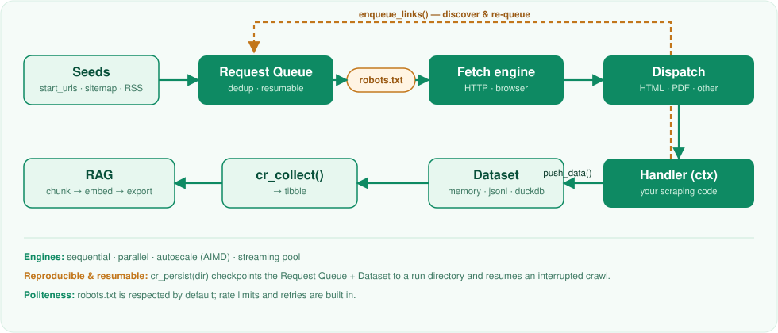

A tidy R interface for reproducible web crawling — inspired by the architecture of Crawlee, implemented in pure R.
crawlee brings the unified-crawler idea to R: a deduplicating, resumable request queue, content-type aware handlers, structured storage and rich console logging via cli. It can crawl HTML pages, sitemaps, RSS and Atom feeds and PDF documents — with reproducibility as a first-class concern.
It is built entirely on the R web-scraping ecosystem (httr2, rvest, xml2, chromote) — no Node.js runtime required.
How it works
A crawl is a loop: requests flow through a deduplicating queue to a fetch engine; each response is dispatched to a handler that extracts data (push_data()) and discovers more links (enqueue_links()), which flow back into the queue until it drains.

Installation
# install.packages("pak")
pak::pak("StrategicProjects/crawlee")Usage
library(crawlee)
resultado <- crawler("https://example.com") |>
cr_options(delay = 0.5, max_depth = 2, respect_robots = TRUE) |>
cr_use_http() |>
cr_on_html(function(ctx) {
ctx$push_data(list(
url = ctx$request$url,
titulo = ctx$page |> rvest::html_element("h1") |> rvest::html_text2()
))
ctx$enqueue_links(glob = "*/blog/*")
}) |>
cr_run() |>
cr_collect()
resultado
#> # A tibble: 1 × 2
#> url titulo
#> <chr> <chr>
#> 1 https://example.com Example DomainDesign principles
- Reproducibility first — deduplicating, resumable request queue; runs are meant to be deterministic and re-runnable.
-
No heavy mandatory dependencies — DuckDB, chromote and pdftools are optional (
Suggests), loaded only when used. -
Tidy & predictable —
cr_*verbs compose with the native pipe and always return tibbles. -
A polite web citizen — rate limiting and
robots.txtawareness by default.
Roadmap
| Milestone | Scope | Status |
|---|---|---|
| M1 | Core: queue, HTTP, HTML handlers, dataset, cli logs | ✅ |
| M2 | Sitemap & RSS discovery, robots.txt enforcement | ✅ |
| M3 | PDF / document handlers (pdftools) |
✅ |
| M4 | Headless browser backend (chromote) |
✅ |
| M5 | RAG helpers (chunking, embeddings, export) | ✅ |
| M6 | Persistent & resumable storage (jsonl/duckdb, cr_persist()) |
✅ |
| M7 | Parallel fetching (cr_parallel()) |
✅ |
| M8 | Autoscaling (cr_autoscale()) & streaming pool (cr_stream()) |
✅ |
| M9 | Adaptive streaming + per-host pacing | ✅ |